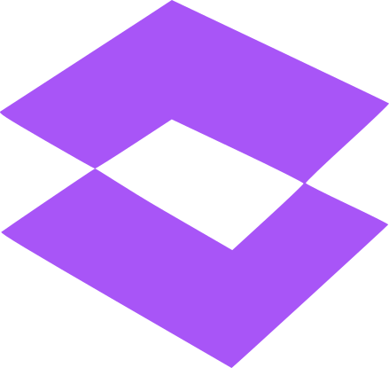

Strategic Analysis
Our intelligence framework initiates continuous observation of institutional data streams—from documentation and project protocols to operational logs. It identifies "Ethical Drift"—the subtle divergence between operational reality and governance standards.
Strategic Insight
Raw data is translated into C-suite intelligence. We apply weighted risk indices to filter out operational noise, ensuring that high-severity deviations are prioritized for executive oversight and strategic intervention.
Remediation Action
Once a risk is validated, the system orchestrates a managed governance workflow. This isn't just a notification; it's a procedural requirement for corrective action, mapped directly to institutional protocols.
Validated Proof
The loop closes with the creation of a permanent precision record. Both the divergence and the remediation are cryptographically verified and logged, providing board-ready proof of proactive stewardship.
[VALIDATED] compliance_timestamp: 2026-04-23T23:30
[STATUS] Loop Integrity Verified: 100%
The Immutable Pulse
Why a "Closed Loop" is the only path to genuine institutional integrity.
Elimination of Blind Spots
Fragmented systems allow deviations to hide in the gaps between departments. The Closed Loop ensures total visibility.
Institutional Memory
By permanently verifying every step, the system creates a culture of accountability that ensures historical excellence is maintained.
Guardrails
We uphold safety parameters and non-negotiable constraints to ensure continuous enterprise protection and technical defensibility.
Identity
Strict execution boundaries and runtime identity constraints preventing autonomous multi-agent networks from exceeding authorized operational scopes.
Confidentiality
Cryptographic isolation safeguards preventing data leakage by locking strategic corporate IP in hardware-enforced Trusted Execution Environments during model processing.
Simulations
Predictive risk containment checkpoints halting high-stakes autonomous deployments until regulatory, financial, and reputational fallout is mathematically modeled.
Cryptography
Immutable liability shields utilizing zero-knowledge proofs to lock down audit trails, strictly guaranteeing legal defensibility of all automated decisions.
Cybersecurity
Active defense perimeters automatically intercepting and neutralizing prompt injections and adversarial breaches before they penetrate core enterprise infrastructure.

AI Ethics
Hardcoded behavioral constraints dynamically filtering toxicity and bias, strictly tethering all autonomous enterprise outputs to corporate ethical frameworks.